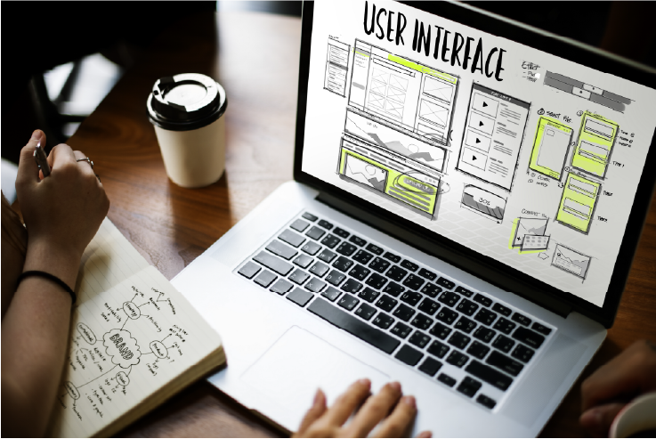
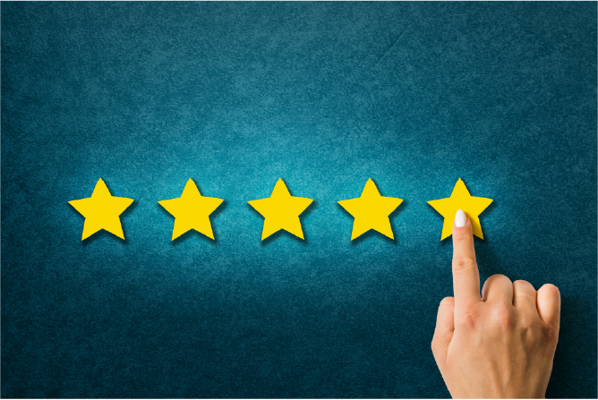

Pack Graphique
Inclut la création de logo, identité visuelle et prints. Création des visuels qui reflètent l'âme de votre entreprise et captivent votre audience. Avec mon expertise en design, nous vous aidons à créer une identité visuelle forte et cohérente.
Pack Web
Création de sites web à votre image, personnalisés. Que vous ayez besoin d'un site vitrine, d'un e-commerce, je réalise des sites modernes et performants avec une approche d'éco-conception et d'experiences utilisateurs qui répondent à vos besoins.

Pack Conseil & Accompagnement Marketing
Améliorez vos stratégies marketing, optimisez votre communication et renforcez votre présence sur le marché avec une approche sur mesure et des conseils spécialisés.

Pack Utilisation du Numérique
Tirez parti des outils numériques pour améliorer votre efficacité opérationnelle et votre présence en ligne grâce à des conseils et des formations adaptés.
Pack Analyse 360°
Adoptez une approche complète et détaillée pour analyser et optimiser tous les aspects de votre entreprise avec une forte composante numérique.
Pack Premium
Le Pack Premium prise en charge complète et sur mesure. Il inclut tous les services des autres packs, avec des prestations exclusives et un accompagnement. Idéal pour ceux qui cherchent un service haut de gamme.